체육활동을 즐기는 어스인
▶ 테니스부 (DKUTC) ◀
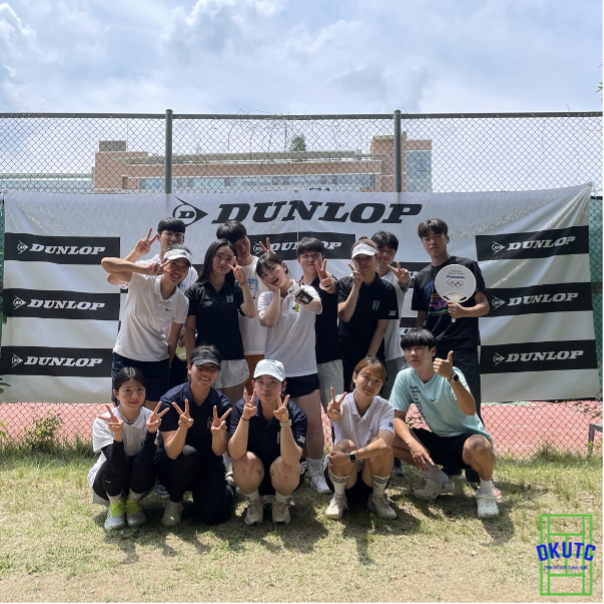
🎾 안녕하세요! 단국대학교 죽전캠퍼스 테니스 동아리 DKUTC 입니다.🎾
⏩️ DKUTC는 학기 중 매주 정기 레슨을 통해 테니스의 기본자세를 배우며 실력 향상과 함께 테니스를 칠 기회를 제공하고 있습니다.
📣 올해부터 새롭게 정기레슨과 더불어 매주 ‘게임 데이’를 추가해 정기 레슨에서 배운 실력을 발휘할 수 있는 기회를 제공하고 게임 룰에 대한 이해를 높이며 동아리 부원들과 친해질 수 있는 기회를 마련하고 있습니다❕
⏩️ 이외에도 동아리 부원들 간의 친목을 위한 MT뿐만 아니라 죽·천배, 회원배, 전국 대학 오픈 등 대회를 통해 테니스의 다양한 면모를 경험하고 자신의 실력을 펼치며 성장할 수 있는 좋은 기회를 제공하는 활동을 하고 있습니다.
☞ 정기 레슨, 게임 데이: 화, 수, 목 17:30~19:30 (정기 레슨 주 2회, 게임 데이 주 1회)
☞ 회비: 신입부원 4만원 (입부비 포함), 기존부원 3만원
☞ 모집 기간: 매 학기 개강 전후
☞ 문의: 010-2484-6995 / DKUTC 인스타그램 @dkutc_1971
▶ 무혼 ◀
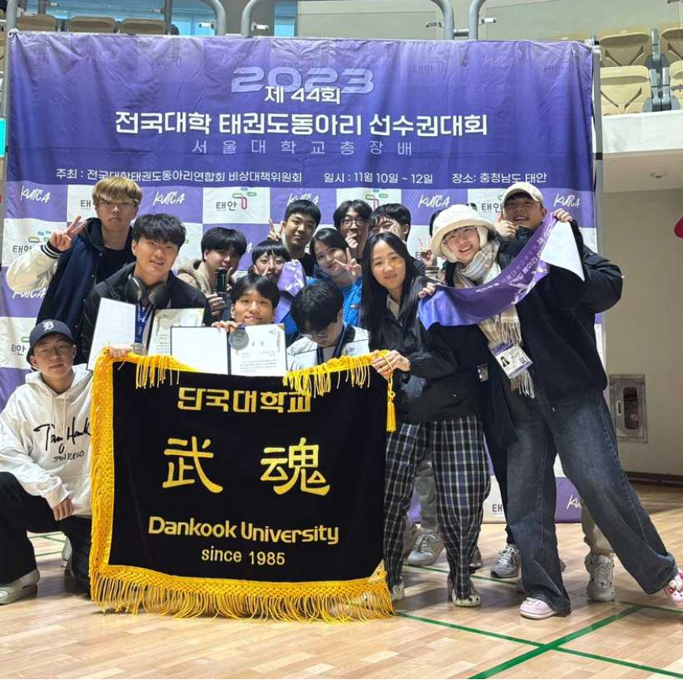
🥋태권도 동아리 "무혼"에서 44기 신입 부원을 모집합니다🥋
안녕하세요. 단국대학교(죽전캠) 중앙동아리 태권도부 무혼입니다.
저희 무혼에서 2024년도를 함께할 44기 신입 부원을 모집합니다!
🐥 모집대상 🐥
❗신입생 및 재학생 (고학번 포함)
❗태권도 해본 적은 없지만 하고 싶었던 분
❗태권도로 이름 좀 날렸던 분
❗운동하면서 체력 기르고 싶으신 분
❗공강시간에 편안하게 쉬고 싶으신 분
❗타과, 타대학과 친해지고 싶은 분
🖤모두모두 환영합니다🖤
🐥 활동 내용 🐥
🎖정기운동 (주 3회)
🎖정기회의 (주 1회)
🎖연합 합숙
🎖전국대회
🎖타 대학과의 교류운동
🎖그 외 각종 친목활동 (MT 등)
🐥 문의 🐥
동아리 방 : 혜당관 514호(우리은행 반대편)
회장 : 장성국 010-6630-2722
🐰 관심 있으신 분들은 언제든지 동아리 방을 방문하시거나 위 번호로 연락 주시면 됩니당 🐰
▶ 산악부 (DKUAC) ◀
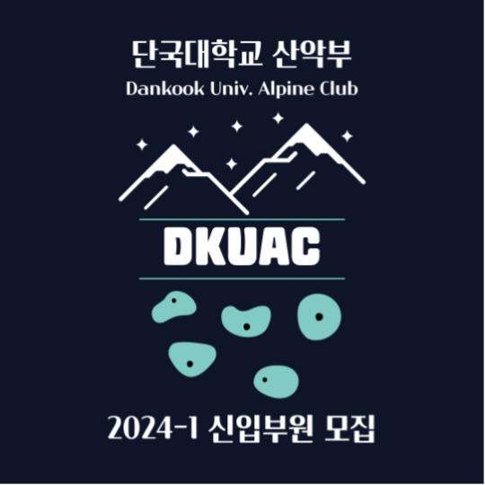 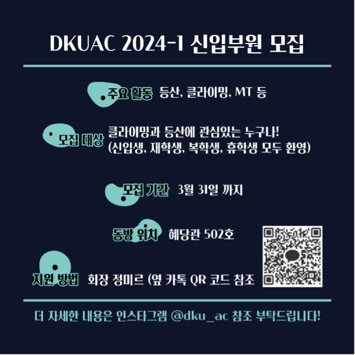
학교 부근에 위치한 산에서 등산 활동을 진행하며 미금역에 위치한 실내 클라이밍장에서 볼더링 활동과 판교 공원에 위치한 인공암벽에서 외벽 클라이밍 활동을 진행합니다.
등산 활동과 클라이밍 활동을 격주로 번갈아가며 진행하고, 학기 중에 활동은 주말 위주로 활동 진행합니다.
▶ 위너스 ◀
건강한 신체의 단련과 건전한 대학생활을 통한 인격도야 및 대학문화의 창달
▶ 요트부 ◀
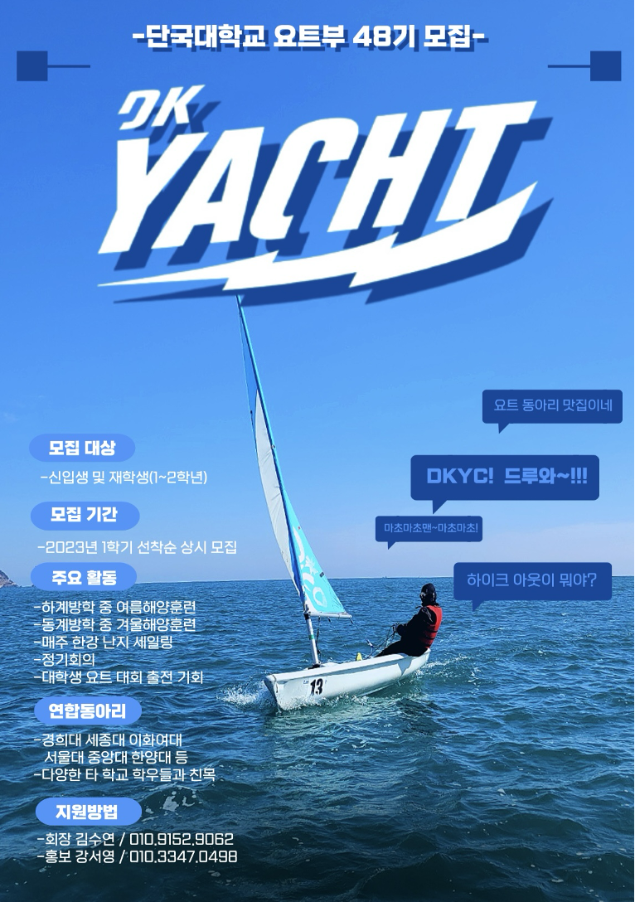
안녕하세요! 단국대 요트부 동아리 DKYC⛵️입니다!
DKYC⛵️는 한강이나 바다에서 요트를 타는 이색 스포츠 동아리입니다!
매주 한강에서 요트를 타고 여름, 겨울에는 요트 실력을 업그레이드 할 수 있는 해양훈련을 가서 같이 생활하게 되니 친목은 말할 것도 없겠죠?? 동아리원의 느낌보다는 누구 하나 소외되지 않는 가족 같은 느낌이 강하다는 것을 dkyc부원이라면 모두 느낄 것입니다😊
대부분의 사람들은 요트라는 단어를 들었을 때 스포츠 느낌보다는 여유, 와인, 호화로움 등을 생각하실 수 있는데요! 대학 동아리에서 타는 요트는 크루저와 같이 동력으로 가는 배가 아닌 오직 바람의 힘으로 가는 무동력 딩기요트입니다. 저희가 주로 타는 요트는 1~2인승이며, 본인 스스로 바람의 방향이나 속도를 느끼며 배를 컨트롤 하는 스포츠 입니다!
따라서 운동도 되고 생각도 많이 해야하지만 바람을 이용해 스피드를 느낄 수 있는 재밌고 스릴 있는 스포츠라고 할 수 있습니다!
물에 대한 두려움이 있으면 접할 수 없는 동아리라고 생각할 수 있지만 속도를 스스로 조절할 수 있으며 처음에는 숙련된 동아리부원과 함께 요트를 타기 때문에 걱정은 안하셔도 됩니다! 물과 요트랑 친해진 후 혼자 타면서 속도를 느끼고 물에 빠져보기도 하면서 오히려 물공포증을 극복할 수 있는 기회가 되기도 합니다.
또한,연합동아리로써 다른 학교(서울대,연세대,경희대,이화여대,홍익대,한양대)와 유대를 형성할 수 있는 기회가 많습니다. 매주 세일링에서 종종 마주치기도 하고, 해양훈련에서 짧지 않은 시간들을 같이 보내기 때문에 연합동아리 중에서도 다른 학교와의 친분이 두터운 편입니다.
요트부에는 요트와 동아리에 대한 애정이 있는 부원들이 많아 졸업을 한 선배님들이 종종 세일링 때 도와주시거나 해양 훈련에 오셔서 맛있는 음식들을 사주시면서 응원해주시는 경우가 많습니다!
덕분에 유익한 이야기들도 많이 들을 수 있고 요트에 대한 조언도 들을 수 있어 같은 기수 부원들뿐만 아니라 위아래로도 좋은 관계를 유지할 수 있습니다😊(선배님들 항상 감사합니다🥹)
이상 흰 천과 바람만 있으면 어디든 갈 수 있는 시원하고 낭만 있는 동아리 dkyc⛵️였습니다!
👍🏻이색 스포츠 동아리
• 어디서도 접하기 어려운 요트를 매주 한강에서 즐길 수 있는 이색 스포츠 동아리 입니다!
• 방학에는 포항이나 부산의 드넓은 바다에서 요트를 만끽할 수 있습니다!
• 어려워 보일 수 있는 요트를 요트부 선배님들과 함께 재미있게 하나하나 천천히 배워가며 즐겁고 안전하게 즐길 수 있습니다!
👍🏻학교 내에서 다양한 사람들과 두터운 친분을 다질 수 있는 가족 같은 동아리
• 다양한 학과와 학번의 선후배가 만나 요트부의 일원으로서 친목을 다질 수 있습니다!
• 매주 회의와 세일링을 통해 요트부 선후배끼리 친해질 수 있습니다!(+졸업하신 선배님들도 가끔씩 오시기 때문에 함께 어울리고 취업 후 궁금한 점에 대해서도 도움 받을 수 있습니당😊)
• 여름 해양훈련과 겨울 해양훈련을 함께 한다면 서먹서먹 하기가 더 힘들겠죠??ㅎㅎ
• 선후배 관계보다는 가족에 더 가까운 동아리!
👍🏻우리 대학뿐만 아니라 다른 대학교 사람들과도 만날 수 있는 연합동아리
• 서울대, 연세대, 경희대, 이화여대, 한양대, 홍익대 등 다양한 학교와 함께 하는 연합동아리로, 쉽게 만나기 힘든 다른 학교 사람들과 친해질 수 있는 기회!
• 매주 한강에서 다른 학교 친구들과 함께 세일링을 하고, 방학에는 함께 해양훈련을 가기 때문에 다양한 사람들과 다양한 경험을 할 수 있는 좋은 기회가 단국대 요트부 DKYC에 있습니다!
❓친구를 어떻게 사귈까? 걱정이 된다면??
➡️ 일주일에 한 번씩 세일링, 세일링 후 뒷풀이로 동아리원들끼리 친목을 다질 수 있는 시스템!!
소규모 동아리의 장점인 만큼 가족 같은 동기들, 끈끈한 선후배 관계 등 대학생활에서의 소중한 인연들을 만날 수 있습니다😊
❓물이 무섭고 수영도 못해서 망설여진다면?
➡️ 동아리 내에서도 요트는 관심이 가는데 물이 무서워 고민한 사람들이 많았지만 정기적인 세일링과 해양 훈련으로 물에 대한 두려움이 없어지고 오히려 물과 요트에 대한 재미를 느껴 진정한 요트인이 된 사람들이 많답니다!! 물공포증 극복 전문치료 dkyc
⛑️ 항상 구명 조끼를 착용한 상태로 요트를 타고 해양 훈련 시 전담 코치님과 해경이 함께 하니 안전상의 걱정은 하지 않으셔도 됩니다!
❓요트를 잘 못 타면 어떡하지 고민된다면?
➡️ 요트부는 신입생들을 위한 체계적인 이론 교육을 매주 회의에서 진행합니다!! 그렇다고 지루하게 길게 하는 것이 아닌! 조금씩 꾸준히 합니다!
또한, 선배들과 함께 배를 타면서 요트에 대해 배우기 때문에 걱정 하실 필요 없습니다!!
두 번의 해양 훈련에서도 요트에 대해 많은 것을 배울 수 있으므로 시간이 지나면 어느 순간 진정한 요트인이 된 자신을 보실 수 있으실 거에요^^
❓해양훈련이 너무 길고 부담스러우신가요?
➡️ 2주 간의 여름해양훈련 1주일의 겨울해양훈련 가기 직전엔 기대도 되지만 긴 기간 동안 버틸 수 있을지 걱정이 앞설 수 있습니다. 그러나 해양훈련을 가시면 하루하루가 너무 빨리 지나가는 것을 느낄 수 있습니다!!그만큼 즐겁다는 소리겠죠?? 해양훈련이 끝나고 돌아온 후에도 그때를 추억하며 돌아가고 싶어하는 해훈병에 걸릴 수도 있답니다??ㅎ
DKYC 요트부⛵️는 연합동아리의 장점을 살려 여름해양훈련에서는 다른 학교 요트부 사람들과 함께 배를 타며 새로운 인간관계를 형성할 수 있는 유일무이한 경험을 제공합니다!
겨울해양훈련에서는 단국대 요트부끼리만의 특별한 추억을 쌓고 끈끈한 관계를 형성할 수 있는 기회입니다😊
⛵️ 학기 중 힘든 한 주를 끝내고 시원하게 요트 타는 낭만을, 방학 중 드넓은 바다에서 요트 타는 여유로움을 우리 DKYC⛵️와 함께 해요 ❤️
저희는 여러분을 기다리고 있습니다😊😊
⛵️단국대학교 요트부 인스타그램(@dankookyacht)
▶ ACE ◀
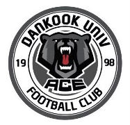
축구를 통하여 회원 상호간의 친목화합을 바탕으로 하여 참된 단국인을 정립
▶ ONELOVE ◀
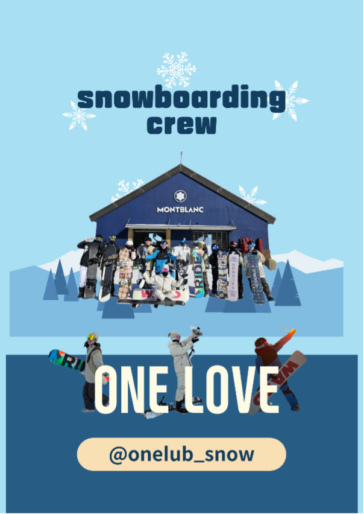
저희 원러브 동아리는 열정적인 구성원들과 함께 즐거운 스노우보드 체험을 추구하는 곳입니다. 모두 함께 눈 위의 스릴과 즐거움을 느끼길 바랍니다!
▶ 코디악베어즈 ◀
미식축구 운동을 통한 건전한 신체단련 및 인격도야
▶ PANDAS ◀
야구회의 단결과 회원들의 발전 상호 친목 및 유대
▶ FLY ◀
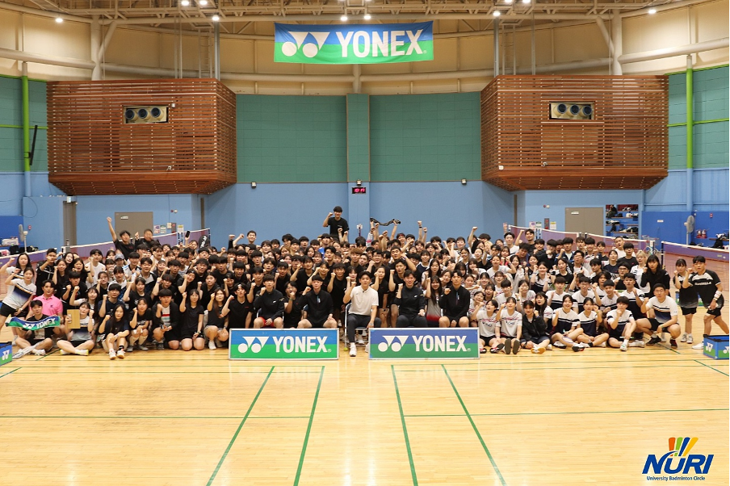 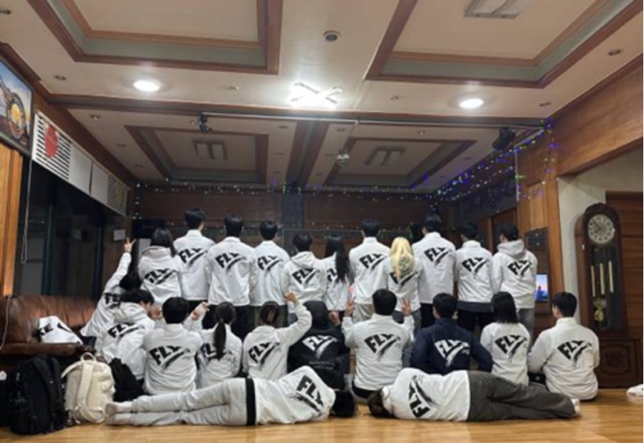
1. 일주일에 두번 씩 정기 운동을 진행하고 있습니다!! 배드민턴을 좋아하는 사람들과 주기적으로 모여 운동도 하면서 친목도 다질 수 있습니다!!
2. 저희 동아리는 대학 배드민턴 동아리 연합회 (Nuri)에 소속되어 있어 다양한 학교들과 교류전을 진행하고 있습니다!! 다른 학교와의 교류전은 더 다양한 실력자들을 만날 수 있는 기회입니다!!
3. 동아리에서 매 학기에 한 번씩 MT를 가고 있습니다!! 동아리 사람들과 함께 즐기는 다양한 레크레이션과 더불어 재밌는 술자리 또한 준비되어 있으니 기대하셔도 좋습니다!!
4. 2023년부터 졸업생 선배님들과의 연을 이어가고픈 마음에 OB-YB(졸업생-재학생) 친선전을 매학기 진행하고 있습니다. 동아리를 지금까지 이끌어주신 동아리 선배님들을 만날 수 있는 자리입니다!!
5. 매학기 단국대학교 체육교육과 배드민턴 동아리(단내)와 교류전을 진행하고 있습니다. 다양한 경품 또한 함께 하니 항상 분위기는 뜨거웠습니다!!
▶ 피닉스 ◀
회원상호간의 협동심을 고취시키고 심신을 단련하여 건전한 정신함양
▶ 검도부 ◀
운동과 부원들 간의 친목, 검도를 통해 몸과 마음을 단련시키고 검술을 익힙니다.
▶ 단쿼시 ◀
실내스포츠 스쿼시를 학생들에게 알리고, 체육활동을 통한 즐거운 학교생활을 도모
▶ DKRC (가등록 동아리) ◀
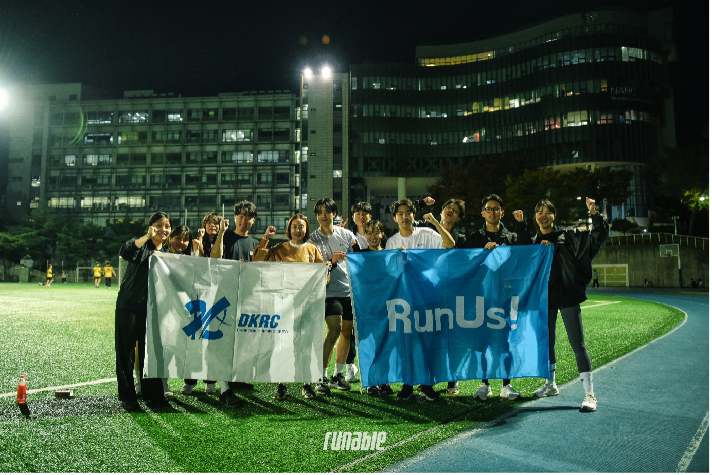 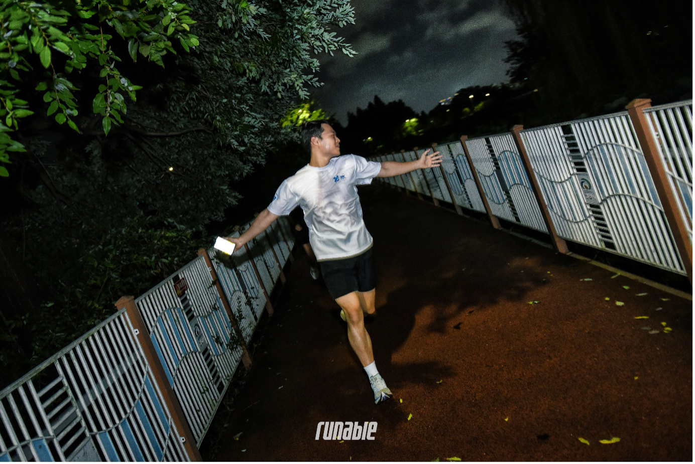
안녕하세요 저희는 DKRC(DanKook Running Crew)입니다.
DKRC는 지난 23년 3월 에 신설된 동아리로, 38명부터 시작하여 현재는 약 130여명의 러닝 크루원들과 함께 러닝을 진행하고 있습니다.
저희는 격주마다 번갈아가며 탄천과 학교 대운동장을 뛰고 있으며 정기런 활동뿐만 아니라 러닝과 관련된 다양한 외부활동도 진행중입니다!
대표적으로 중앙그룹의 자회사인 러 너블에서 주최한 ‘대학러닝리그’와 ‘캠퍼스런’에 참여했고, 23년 2학기때 열렸던 전국 1,000여 명의 대학러너와 31개 대학이 참여한 대학러닝에서는 저희 DKRC가 당당희 전체 3위, 개인전 에서 각각 여자부 2등, 남자부 3등을 차지하면서 단체전과 개인전을 모두 수상한 유일한 러닝 크루가 되기도 했습니다.
그리고 단국대 천안, 순천향대, 연세대, 서울대 등 다양한 대학에서 진행된 캠퍼스런에 참여하기도 했고, 대학러닝리그 종강총회에 참여하여 상명대, 이화여대와 함께 연합러닝을 진행하면서, 현재 대학들간의 연합러닝에도 열심히 참가하고 있는 중입니다!
뿐만 아니라 저희는 다양한 마라톤 활동에도 참여하고 있습니다. 대표적으로 마블런 과 JTBC 서울 마라톤, 2023 서울 달리기 마라톤, 선셋런 마라톤 등 다양한 대회에 참여했으 며 현재는 마라톤 대비반을 새로 신설하여 24년 4월 7일에 열리는 대구 국제마라톤 대회와 4 월 28일에 열리는 서울하프마라톤 대회를 준비하고 있습니다.
저희 모두 3KM도 힘들어하던 러닝 초보부터 시작했지만, 지난 1년간 함께 운동하고 달려오면서 지금은 하프코스와 풀코스도 뛸 수 있는 체력과 실력을 갖추고 있습니다!
러닝 초 보분들부터 평소에 러닝을 즐겨하시는 분들까지 실력에 상관없이 러닝을 사랑하시는 분들이라 면 저희 DKRC의 문을 활짝 열어두고 있겠습니다!
앞으로도 많은 러닝 활동과 다양한 외부활 동을 진행할 계획이니 많은 관심 부탁드리겠습니다. 감사합니다!
▶ DanS (가등록 동아리) ◀
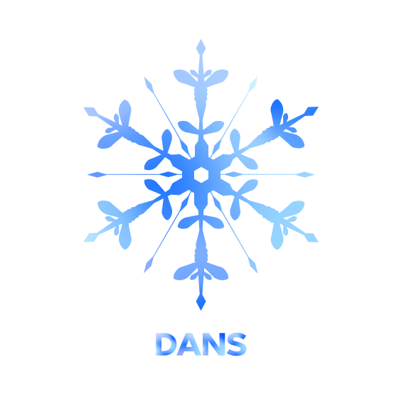